Meet Our Team
We are a passionate team brought together by curiosity, creativity, and a shared enthusiasm for science.
Current Members

陈静|Jing Chen
Principal Investigator
Research: Embryonic Development, Birth Defects, and Developmental Disorders
For more information about Prof. Jing Chen, please visit:
Education and Training
Supervisor: Prof. Anming Meng, CAS Member
Mentor: Prof. Anming Meng, CAS Member

郑倩文|Qianwen Zheng
Lab Manager
Research: Bioinformatics, Epigenetics, Methods to improve the efficiency of browsing Xiaohongshu
Qianwen Zheng is the Lab Manager of CHENJ-Lab. She oversees daily lab operations, manages supplies and equipment, and ensures that research projects run smoothly and efficiently. In her free time, she enjoys browsing Xiaohongshu.

高燕秋|Yanqiu Gao
Research Assistant
Research: Zebrafish
She is a cold-hearted master of zebrafish care. In her free time, she enjoys browsing Xiaohongshu.
杨成贤|Chengxian Yang
Research Assistant
Research: Limb Development

严芸|Yun Yan
Graduate Student
Research: East, West, North, South and all the directions
She loves doing mindless work, and her dream is to make milk tea.

李瑶|Yao Li
Graduate Student
Research: Limb Development
She is currently a PhD student at CHENJ Lab. In her free time, she enjoys playing mahjong.
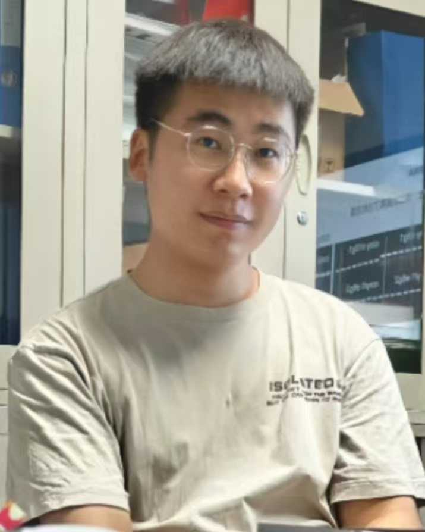
吴耀星|Yaoxing Wu
Graduate Student
Research: Limb Development、Pediatric Surgery
He is currently a PhD student at CHENJ Lab.He likes to play League of Legends in his spare time.
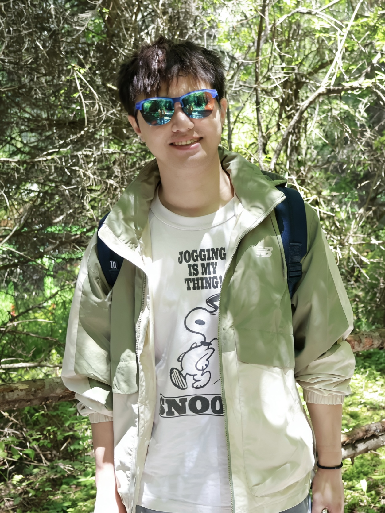
彭赟|Yun Peng
Graduate Student
Research: Liver disease、Pediatric Surgery
He is currently a PhD student at CHENJ Lab.He likes to play Counter-Strike 2 in his spare time.
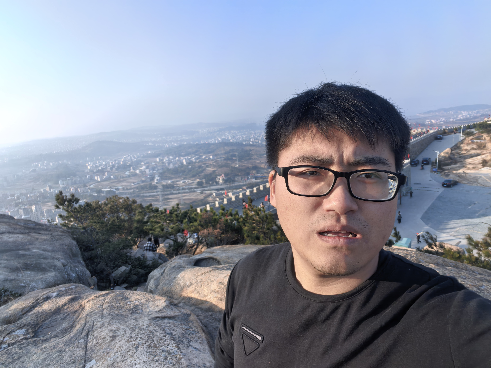
林杨|Yang Lin
Graduate Student
Research: Limb Development、Pediatric Surgery、Bioinformatics
He is currently a PhD student at CHENJ Lab.
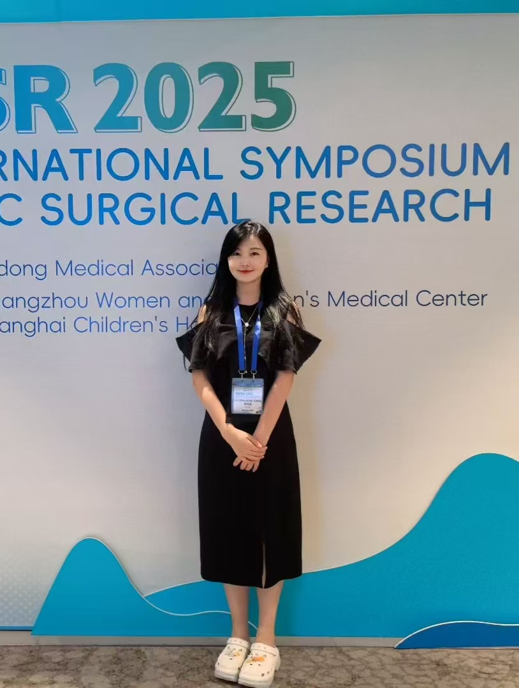
杨晓双|Xiaoshuang Yang
Graduate Student
Research: Liver disease、Pediatric Surgery、Plastic Surgery
She is currently a PhD student at CHENJ Lab. She is also an Attending Physician in Plastic Surgery，Head of Medical Training, Yansuo Medical Group
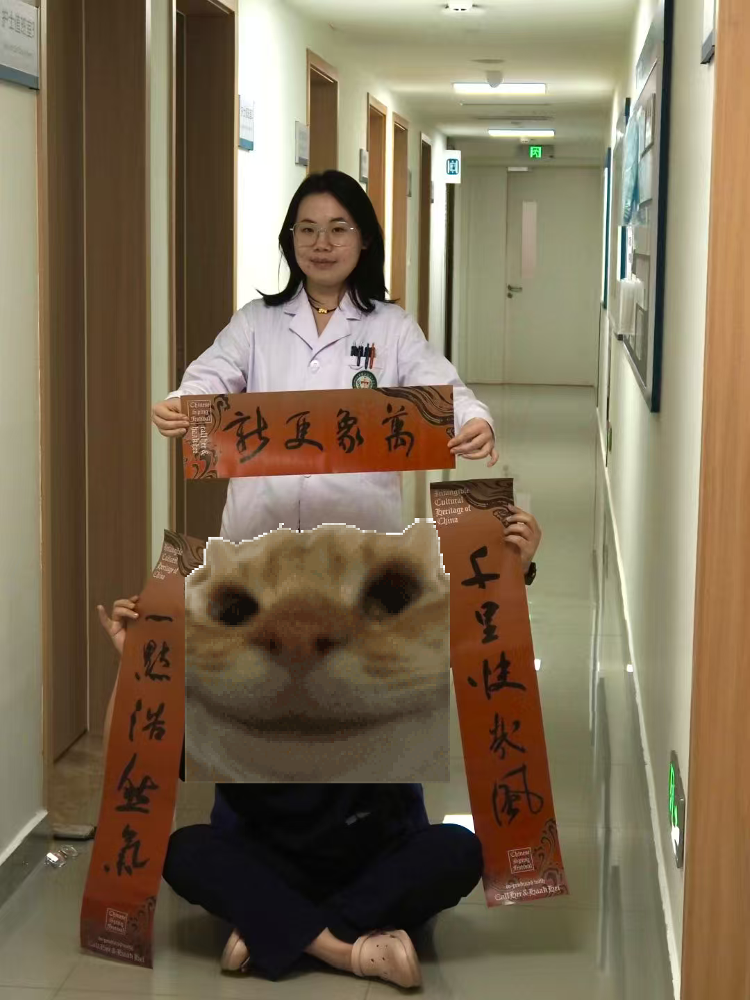
邓意凡|Yifan Deng
Graduate Student
Research: Pediatric Surgery
She is currently a graduate student in CJ lab.
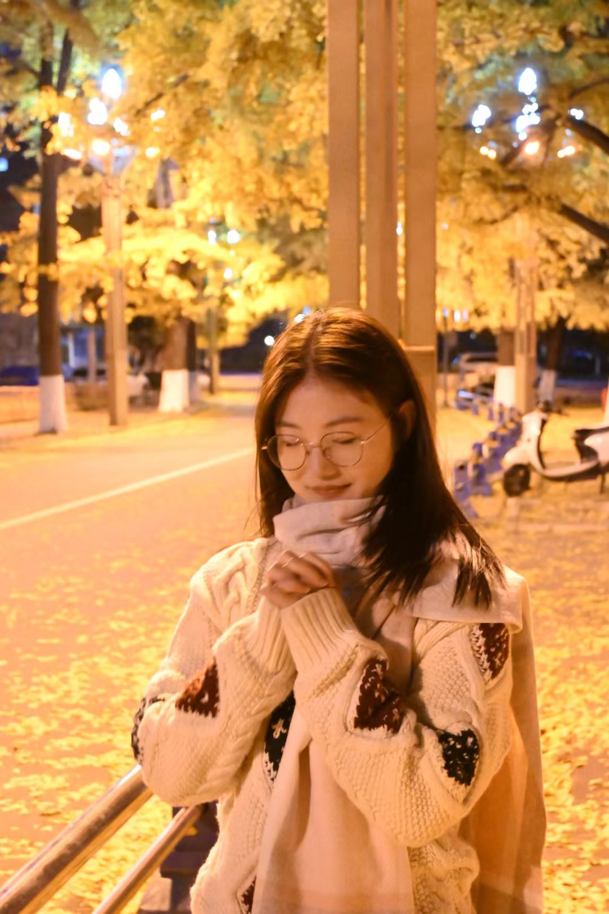
李欣|Xin Li
Graduate Student
Research: Limb Development
She joined CHENJ Lab in 2024. Powered by video games & TV shows. 🎮📺 Real-life health bar: critically low. 🩸Unlikely superpower: profound insights into C57 mouse midwifery. 🐁Current hobby: dragging AI into existential crises about the sheer meaninglessness of life. 🤖.
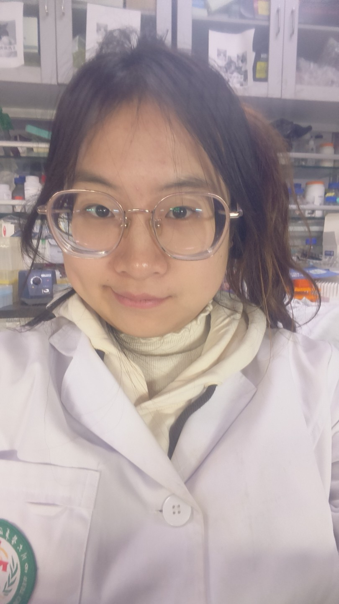
张英涵|Yinghan Zhang
Graduate Student
Research: Limb development and how to become happier and more contented
She is currently a graduate student in CJ lab, and her idol is GG bond, who says ‘Smart, brave, and strong, I really appreciate myself! ’
钟登宇|Dengyu Zhong
Graduate Student
Research: Limb Development
This boy is lazy and he left nothing.

李明澎|Mingpeng Li
Undergraduate Student
Research: Limb Development
He joined CHENJ Lab in 2023, and he is the big handsome bro of CHENJ-Lab. In his free time, he enjoys playing badminton.
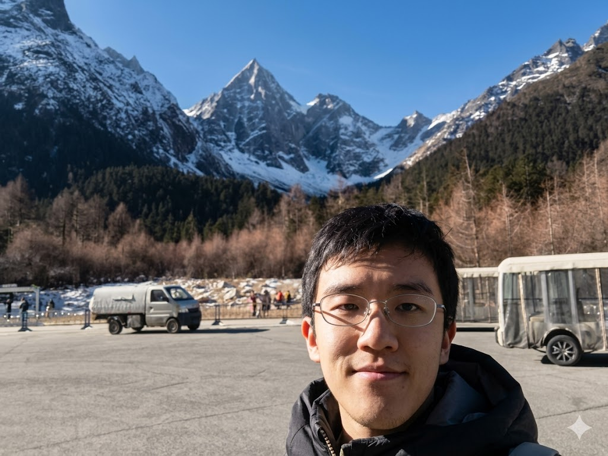
张哲唯|Zhewei Zhang
Undergraduate Student
Research:
Former Members
王琦|Qi Wang
Former postdoctoral fellow
He is currently an attending physician at the West China Hospital.
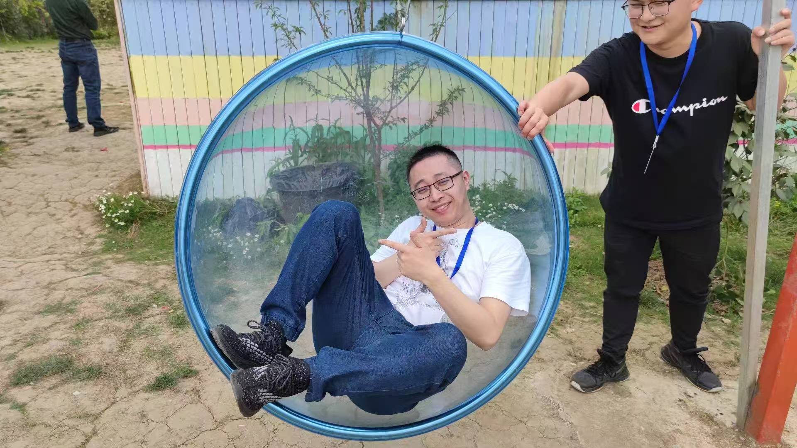
谢小龙|Xiaolong Xie
Former postdoctoral fellow
He is currently an attending physician at the West China Hospital.
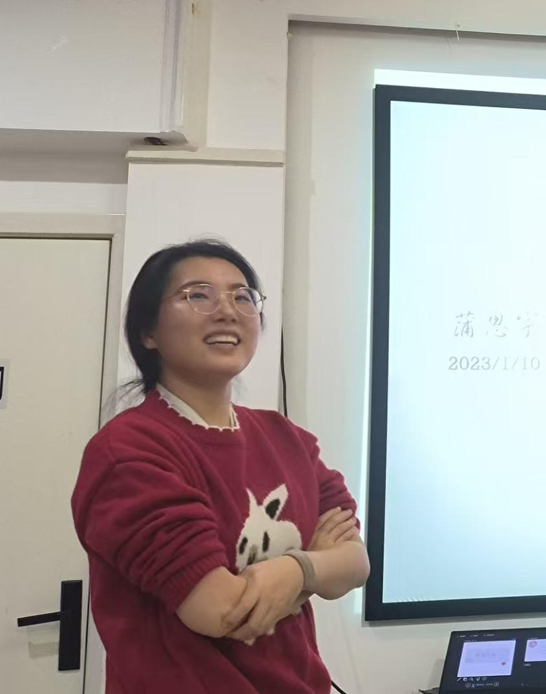
蒲思宇|Siyu Pu
Former graduate student
She is currently an attending physician at the West China Second Hospital.
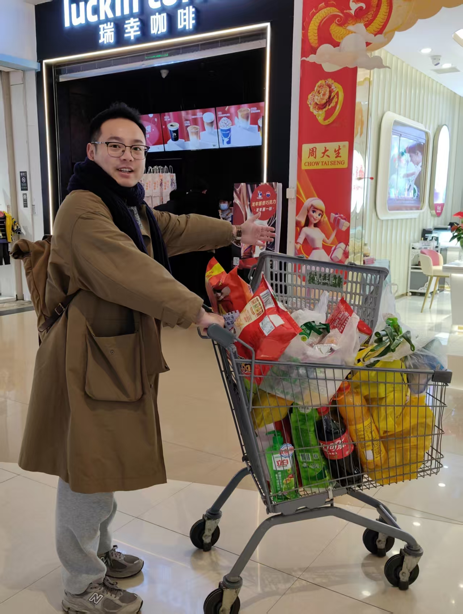
艾诚博|Chengbo Ai
Former graduate student
He is currently an attending physician at the Children’s Hospital of Fudan University.
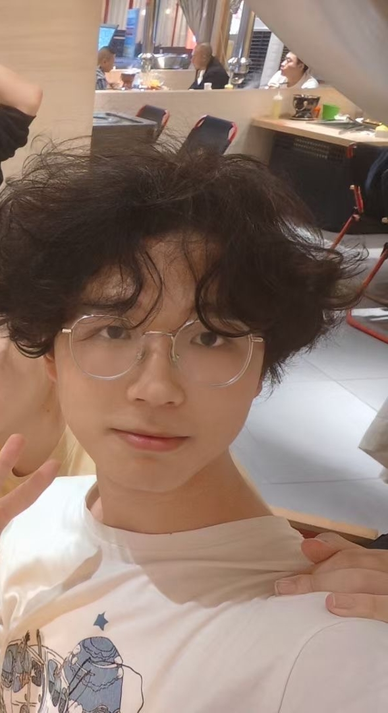
张思轩|Sixuan Zhang
Former undergraduate student
He is currently an undergraduate student at the West China School of Stomatology, Sichuan University.
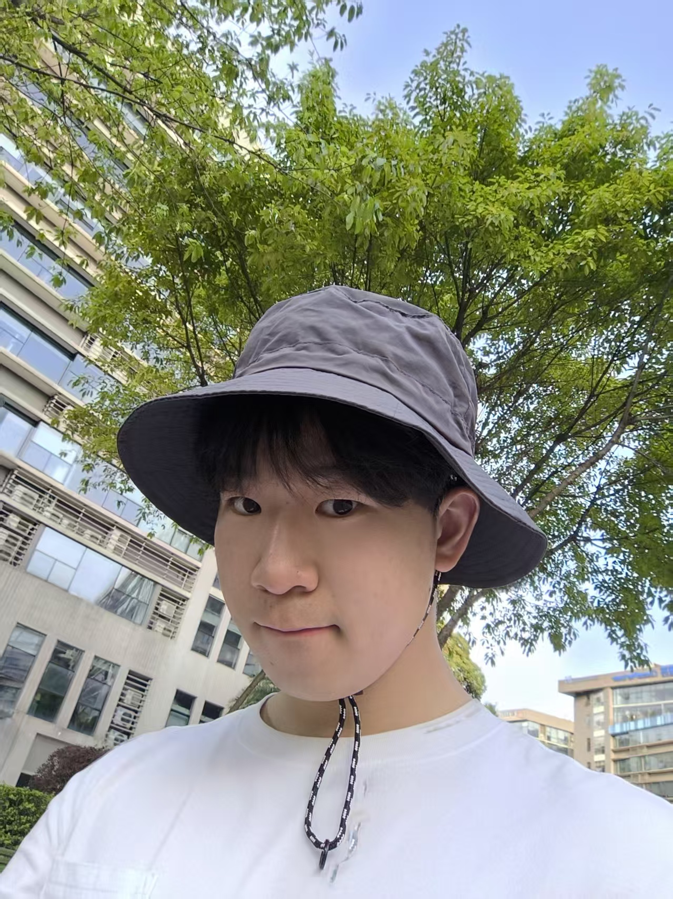
张朝涛|Chaotao Zhang
Former undergraduate student
He is currently a PhD student at Zhejiang University